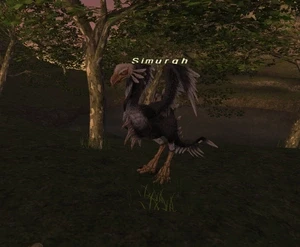
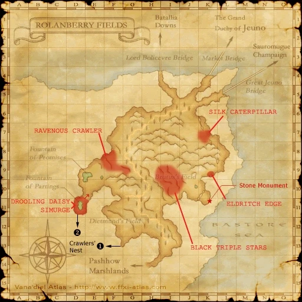

Level 75 reference · Zenith rules
|
Job: Bard, Warrior Notorious Monster |
 |

| Zone | Level | Drops | Steal | Spawns |
Notes |
|---|---|---|---|---|---|
|
58 |
1 |
A, S
| |||
|
HP = Detects Low HP; M = Detects Magic; Sc = Follows by Scent; T(S) = True-sight; T(H) = True-hearing JA = Detects job abilities; WS = Detects weaponskills; Z(D) = Asleep in Daytime; Z(N) = Asleep at Nighttime | |||||


Image source
Notes
- Spawns around the pond at (D-11), outside the exit from Crawlers' Nest, approximately every 21-24 hours.
- Uses Mighty Strikes, Draw In, Horde Lullaby, Massacre Elegy, and Magic Finale, in addition to Roc special attacks.
- Rages after 20 minutes.
- Can be defeated by an alliance of 12 characters at level 60 or a party of 4-5 competent characters at level 75.
- The drop rate for Trotter Boots appears to be around 10%.
Adapted from Eden Wiki: Simurgh · Contributors and history · CC BY-SA 4.0. Revision 44890. Layout, links and optional background text adapted for Zenith.